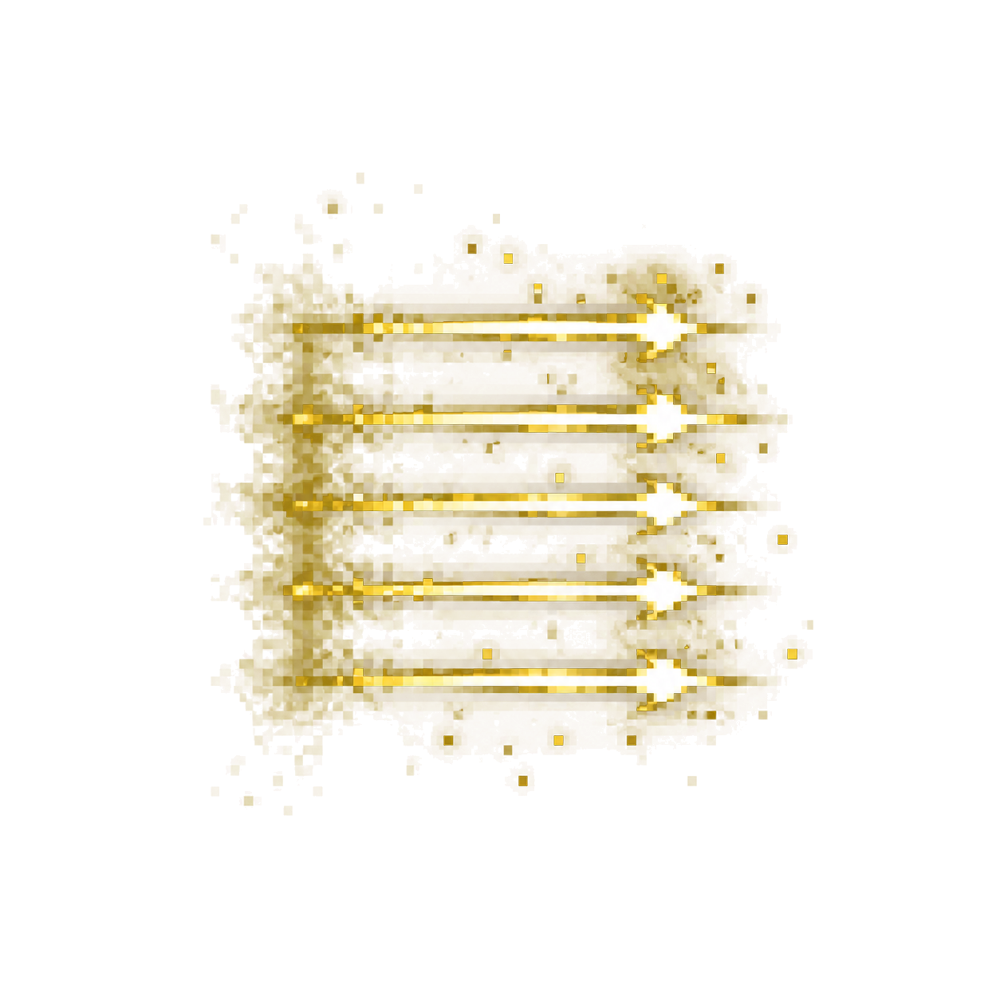
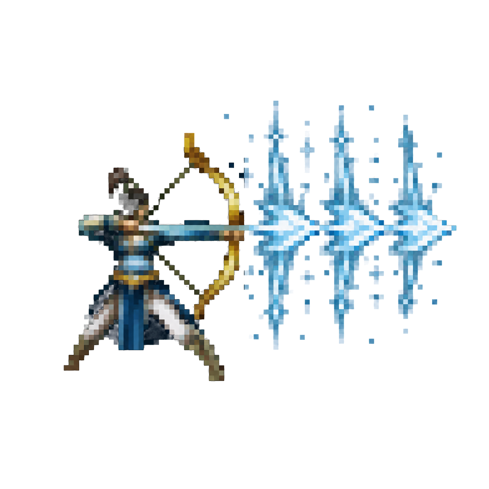
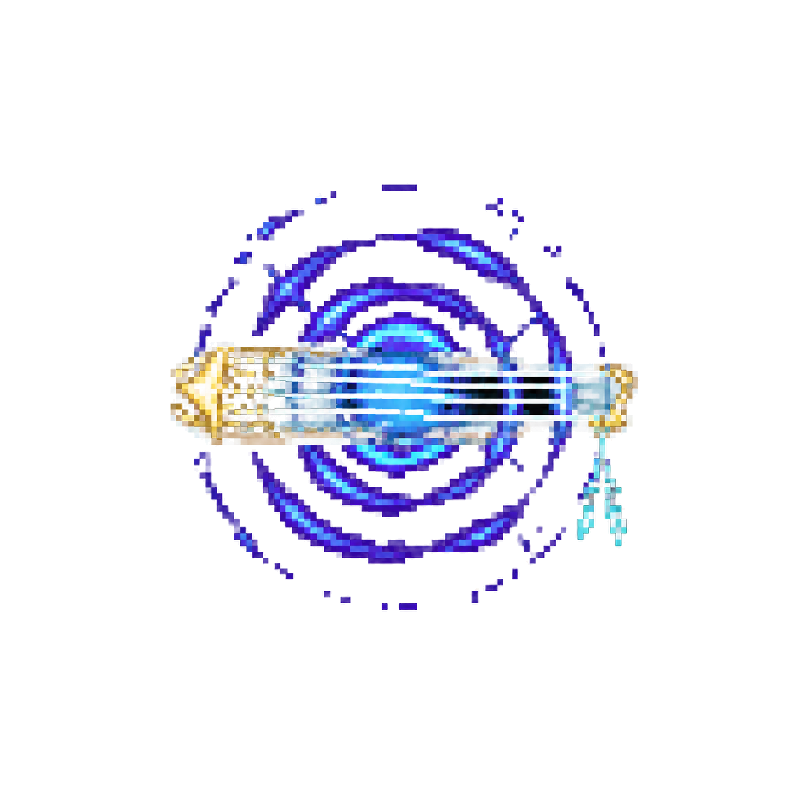

覆盖 94 个原始 icon 为空的武功配置：月影传说 28、新剑侠情缘 65、剑侠情缘2 1。共新绘 65 张；新剑侠情缘有 29 项复用月影图标（27 张本次补绘、1 张推山填海原图、1 张已有弓箭备用图）。点击图片查看原尺寸。
保留各游戏风格：月影以发光能量与细粒子为主；新剑侠以高对比像素轮廓、剑气与五行意象为主；剑侠2采用发光像素兵器。构图是依名称与效果作的美术解释，不改变战斗机制。原有非空图标优先。生成图黑底已转透明；本次透明化修改未推送、未部署。
一柄朴素银色直剑，冷蓝短斩光，基础近身剑击。
单枚细长柳叶飞刀斜向飞出，青绿细尾迹，轻巧精准。
三道蓝紫月牙刃在一个紧凑区域交错旋转，月弧清晰。
一枚金黄蜂尾毒针，尖端碧绿毒滴，短促刺击。
苍劲剑客的简化挥剑剪影与向外迸发的蓝金剑气。

五根金针并列组成向前推进的针墙，金白细光。
三片紫红花瓣聚成尖锐飞梭，单向飞出，柔美凌厉。
亮黄绿色毒液向扇面喷溅，中心酸性液滴。
三张金黄色小符纸呈扇形射出，红色符线仅抽象笔划，不要可读文字。
三颗赭黄岩块沿紧凑螺旋旋转，土黄劲气。
一朵白莲浮在淡蓝水波光环上，宁静而有力量。
橙红火种落入圆形燃烧区域，小型环状火势。
一枚宽短银色飞刀与冷蓝直线尾迹，区别于细长柳叶刀。
一朵深红蔷薇带一段弯曲绿色荆棘追击轨迹。
紫绿毒液如低矮扇形浪潮向前涌出，区别于毒液2的喷溅。
一枚蓝银十字暗器，细长笔直蓝色破空轨迹。
两张很小的金色符纸随机错开飞出，细碎紫金电火花，抽象符线不可读。
火焰掌印推出扇形橙红火浪，单一清楚轮廓。
单柄冰蓝弯刃裹覆白色霜晶，短直线冰气。
紫色蝙蝠展开双翼俯冲的清晰剪影，少量绿色邪气。
三道冰紫剑刃绕空心圆环旋转，阴寒肃杀。
一道水蓝龙形水流弹，紧凑龙头和短尾，向前冲击。
一缕紫绿色蛇形毒烟盘曲向前，细小亮绿毒核。
简化金色拳印伴随三道分叉紫电，随机散射的雷劲。
一颗紧凑青蓝水弹带短水尾，单体直射。
赭黄色沙旋风形成向前移动的风刃，小而紧凑。
三枚金色方孔钱币呈扇形射出，明亮金属边。
粉白花瓣绕中心环形飞旋，区别于紫轩花瓣飞梭。
碧绿水波与一道白色清风弧线凝为向前的细流，名称意象配合单向招式。
金色掌印中含简化龙象轮廓，厚重土金真气形成前推气墙，古朴强劲。
一团紫绿急旋风云，一道毒绿直线穿出，第三式有毒效果，与冰蓝第一式和银白第二式区分。
血红人影环绕一道分叉紫雷，红紫圆形气劲，毒性用微量碧绿点光暗示。
黑紫旋涡张开红色裂隙，压缩为一道横向黑红劲气墙。
青白风雨斜线扇形急射，疏朗三道主线，表现快风残雨配置的散射。

简化弓手侧身拉弓剪影，三枚冰白箭头排成横列，寒冰箭墙。
金褐蟒蛇头从暗处前探，三道扇形蛇形劲气，简练蛇形轮廓。
绿色毒蛇头吐出一线紫绿毒芒，单向穿刺。
直接提取月影传说原图第一帧，无重绘。
银白旋风裹一团浅青云气，直向飞出，无毒无冰的第二式。
幽蓝直剑两侧各一条紫色音波，组成竖立剑气屏障。
一弧简练彩虹从两团青白雨雾间升起，横向光幕。
密集青蓝雨针呈宽扇形飞出，五道明亮主线，与快风残雨和直射版本区分。
金橙猛虎扑击的简化剪影，两道前爪光痕。
半轮暗红落日与一线横向血红劲气，苍凉刚烈。
金色小日轮被三道青白狂风托起，横向展开的风障。
冰蓝旋风凝着三点白霜，直向射出，第一式带寒冰。
灰褐小石落入蓝色水浪，三束扇形飞溅劲气。
黑蓝龙首卷起一弧冰蓝海浪，龙形护壁，寒冰白光。
一束银青风雨凝成笔直高速气箭，单向窄长轨迹，与两个扇形配置区分。
端坐运功的极简紫色人影，环绕一圈紫霞真气，微量毒绿边光。
青蓝旋风扫起白色雪片，凝成一条向前冲出的寒风，显示名风卷残云但配置带冰冻。
金紫两股气流首尾相接反向回旋，阴阳相转的紧凑圆形轮廓。
三道冰白弯刀影呈扇形展开，淡紫幻影尾迹。
一柄金橙刀影与小型日轮，赤金直斩气芒。
一只简化拈花手指扬出三片粉白花瓣，随机扇形轨迹。
一枚古朴金白掌印，内含圆形真气核心，向外三道短劲气。
白色手掌轻扬出扇形雪片与冰蓝光，宁静清晰。
一条银灰长鞭绕成半圆击碎小岩块，带冰蓝寒光。

一枚古琴式弦线符号荡出同心蓝紫音波，暗示区域音杀。
银色斩芒竖直切开两瓣青蓝浪花，气势直接。
武者分掌架势的青白简化动作剪影，左右两道鬃毛般短气流。
三道若隐若现的淡紫无形掌影扇形展开，神秘空灵，名称没有可证实具象典故故以虚影表示。
原始MPC资源404，复用已有月影弓箭备用图。
白金莲花与淡金圆形光晕，水蓝底部波纹，表现区域法力。
一枚紫红尖锐魂芒拖着细窄幽蓝尾迹，单向疾射。
金色拳印前出现五座极简土黄山峰轮廓，厚重一击。